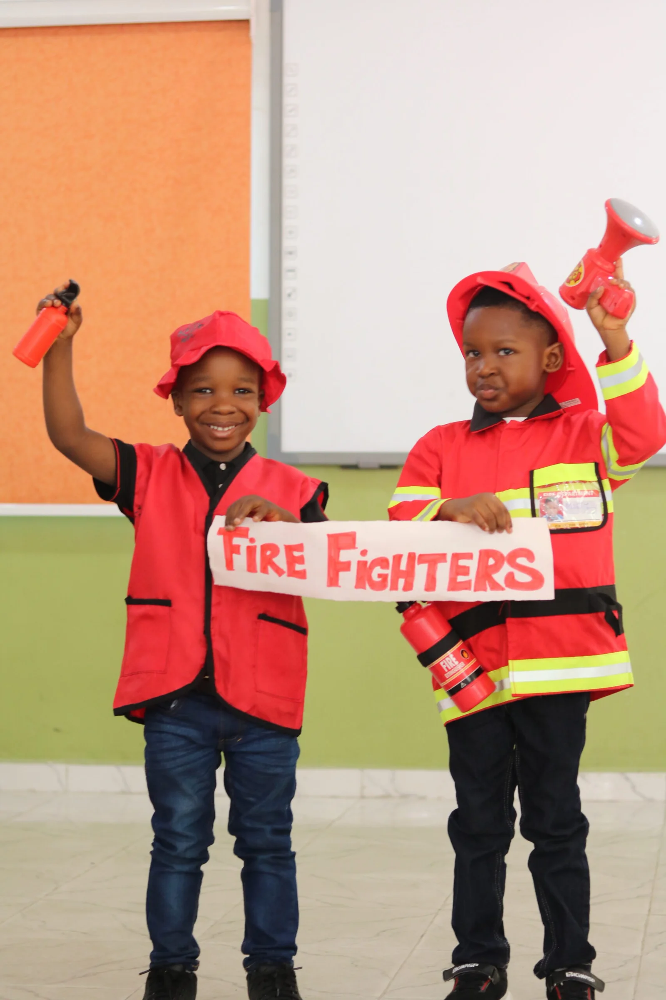

We partner with parents to raise
Future-Ready
Children
Born out of passion for excellent child care and education that questions the regular and looks more into the future, we are built and founded on strong morals, leadership and excellence. We have unconventional ideas about how child care and education should be, and have decided to challenge the status quo and creating a model of what preparing children for the future should look like. Founded in February 2014.

